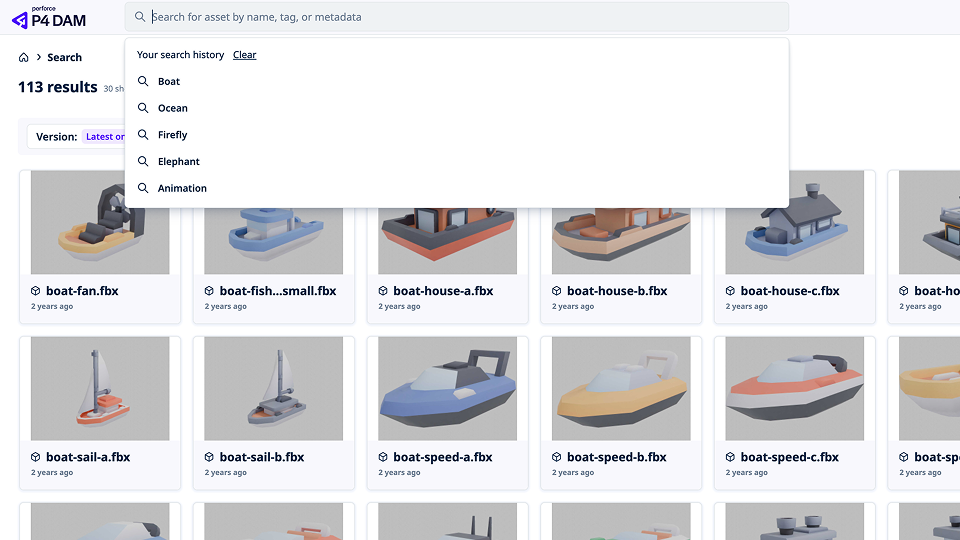
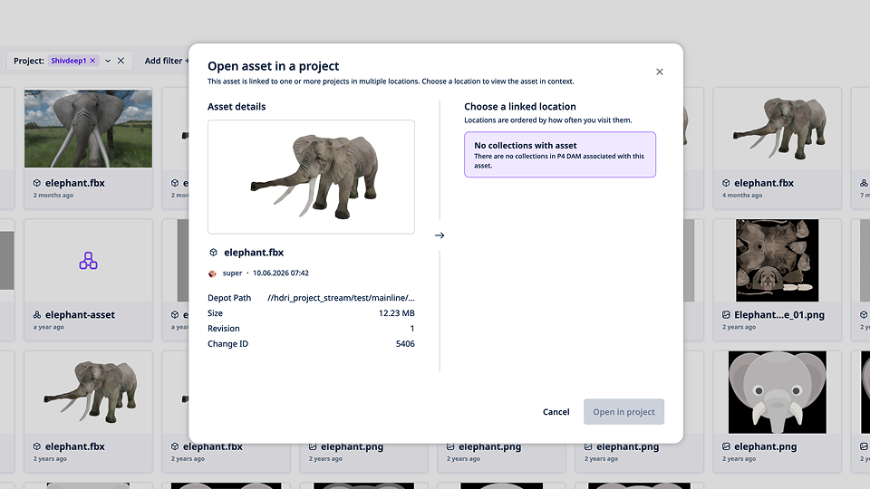

Context
At Perforce, I am the product design lead for P4 DAM, a digital asset management platform used by creative and technical teams in games, film, and VFX, including customers such as Electronic Arts, Pinewood Studios, Xbox Game Studios, and Meta.
P4 DAM sits on top of Perforce version control. Studios store enormous libraries of 3D models, textures, and media, then need to find the right file, understand where they are in the hierarchy, preview it quickly, and decide whether it is ready for review. If any of those steps feel slow or unclear, people leave the product and open specialist tools instead.
My job was not to polish isolated screens. It was to own the product direction for the day-to-day experience: what users see first, how they search and filter, how they move through folders, and how they review assets with confidence.
What I changed, and why
Select a change to see the problem, the decision, and a before-and-after look at the interface.
Search history
Return to recent queries without starting over
Search history was added so teams could jump back to recent queries by name, tag, or metadata without rebuilding the same search each time. The old patterns made people browse or retype when they should have been able to resume. Clearer recent-search access reduced empty hunting, cut unnecessary browsing load on the backend, and made demos feel faster for sales and onboarding.
Result: Users were able to find their assets quicker and without issue.

Advanced filtering
Narrow large libraries with visible, removable filters
Advanced filtering used to feel bolted on. I redesigned it so users could narrow large libraries by the attributes they actually care about, with active filters kept visible and easy to remove. The goal was fewer dead-end result sets and less time spent reopening the same folders.
Result: Users could narrow large libraries faster and reach the right assets with less trial and error.
Breadcrumbs
Stay oriented in deep folder hierarchies
Deep folder trees are normal in enterprise DAM work. Without strong breadcrumbs, users lose their place and jump back to the top too often. I made path orientation a first-class part of the review and browse experience so people could move up and across the hierarchy without resetting their context.
Result: Users stayed oriented in deep hierarchies and moved between folders without losing their place.
Previewing assets
Inspect candidates without committing to a full review
Opening a full asset view for every quick check was too heavy. A dedicated preview experience let users inspect candidates in place, compare options faster, and only commit to a deeper review when the file warranted it. That reduced friction between find and decide.
Result: Users could preview assets quickly in place and decide with less friction.

Dashboard
Give first-time and returning users a clearer starting point
The previous landing experience did not help first-time or returning users understand what mattered next. The new dashboard focused on recent work, useful entry points, and a clearer sense of place. First-time clarity improved, which mattered both for adoption and for sales conversations that depend on a confident first impression.
Result: New users understood the product faster, and returning users got back into work sooner.
Conclusion
Owning the product as lead designer meant deciding which frictions were structural, not cosmetic, and shipping changes that compounded: find faster, stay oriented, preview earlier, and move through libraries with more confidence. The result was a DAM experience that better matched how game, film, and VFX teams actually work.